TokensFarm
TokensFarm's redesign is a breath of fresh air in the DeFi universe. Its light blue hues and 3D coin accents exude modernity, while its streamlined interface speaks volumes about simplicity and sophistication. In a world cluttered with complexity, TokensFarm's visual revamp is a beacon of clarity, inviting users to navigate the world of decentralized finance with confidence and ease. The goal was to develop and develop a design system based on the team's developments.
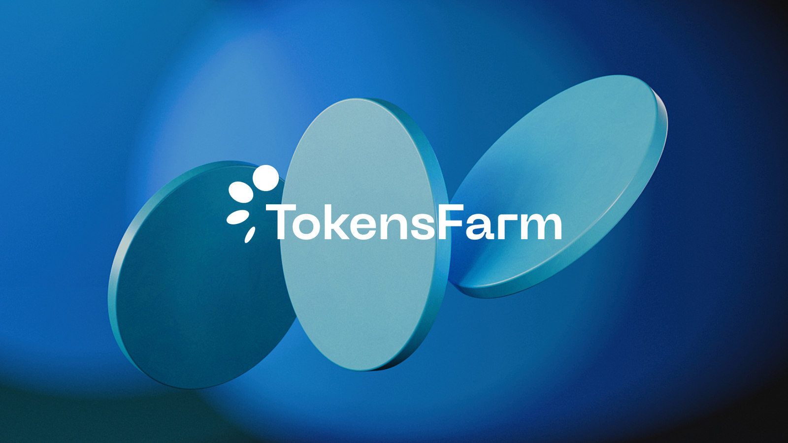
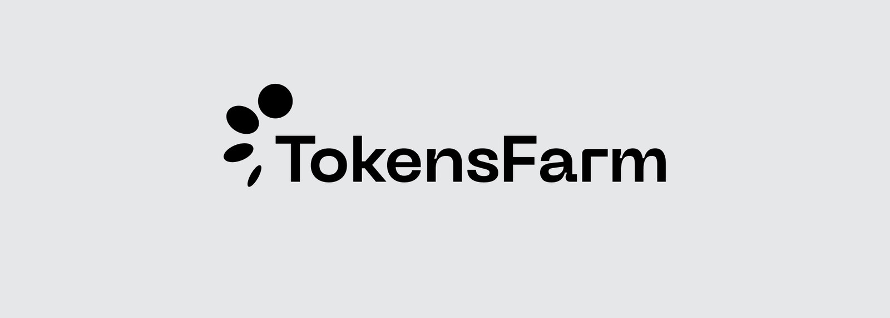
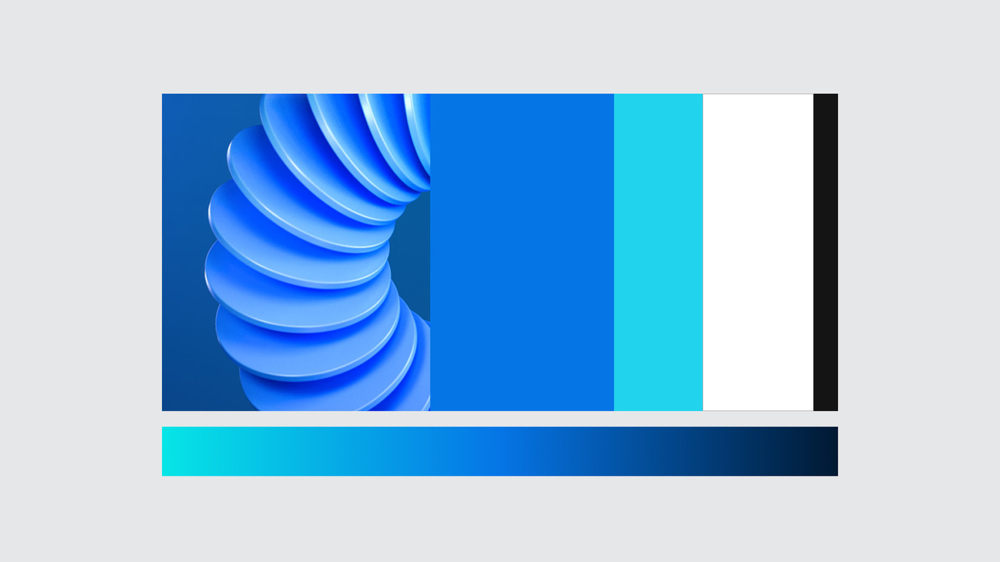
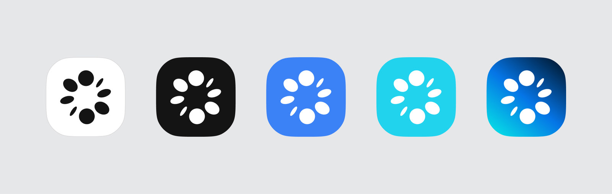
Purpose: Streamlining user experience and visual communication to facilitate seamless interaction and understanding of complex DeFi concepts. Challenge: Balancing technical sophistication with user-friendly accessibility to cater to both experienced investors and newcomers in the crypto space. Brand Mission: To democratize access to decentralized finance (DeFi) by providing a user-centric platform that empowers individuals to participate in yield farming and liquidity provision across multiple chains and DEXs effortlessly. Brand Vision: To become the go-to solution for decentralized farming and liquidity provision, fostering financial inclusivity and innovation in the ever-evolving landscape of digital assets. Brand Essence: Simplicity meets sophistication, empowering users to navigate the complexities of DeFi with ease and confidence.
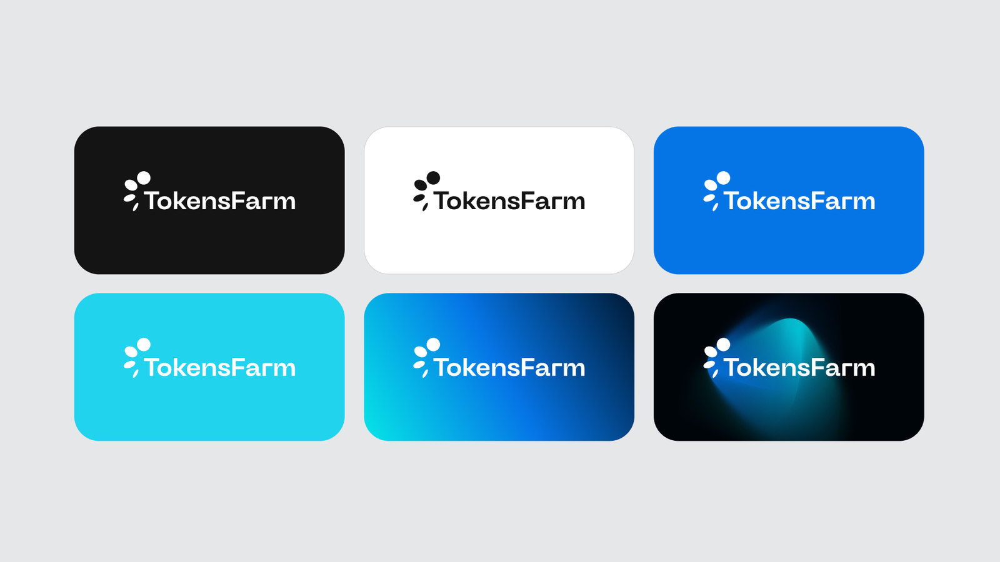
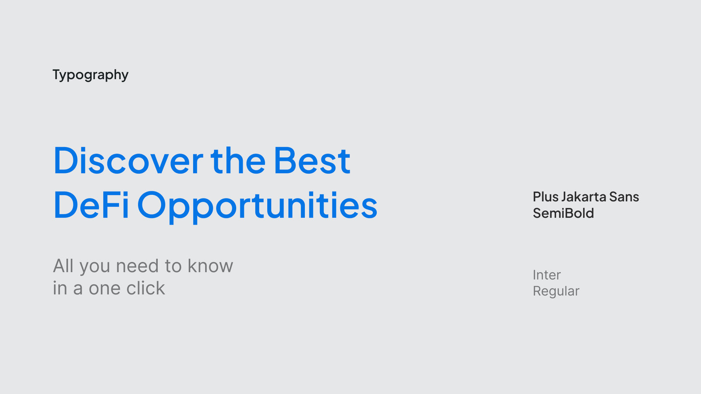
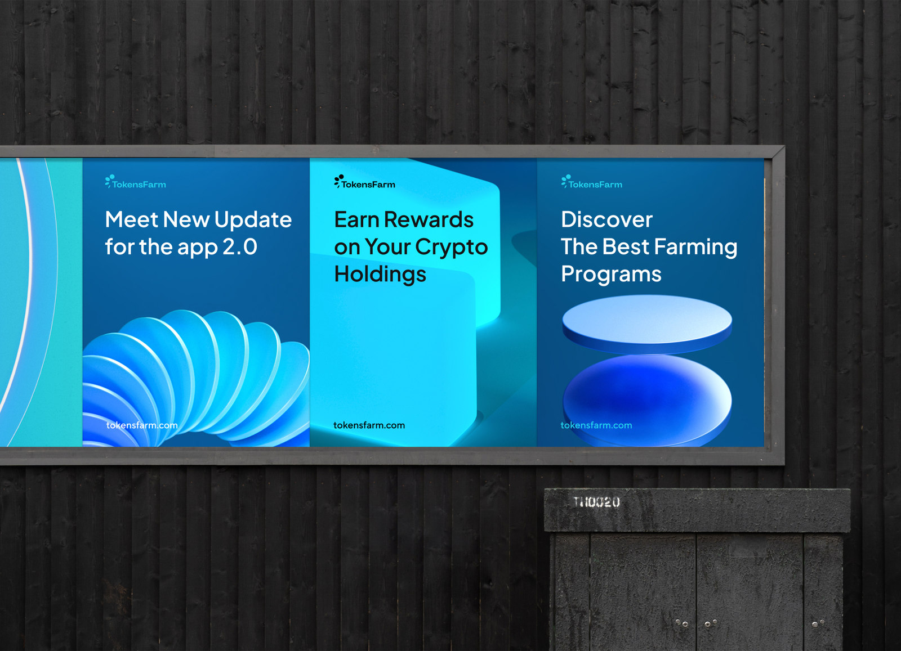
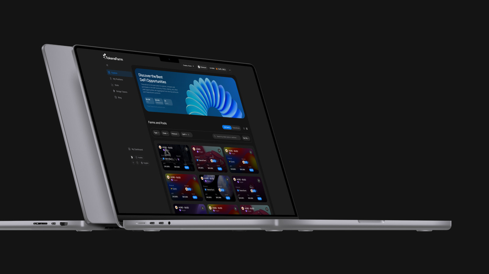
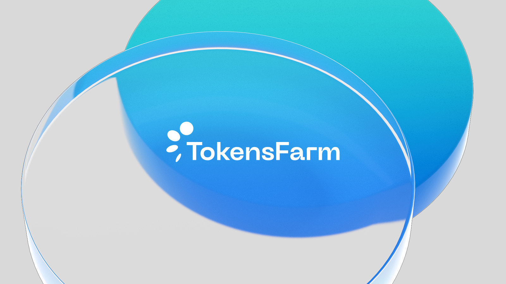
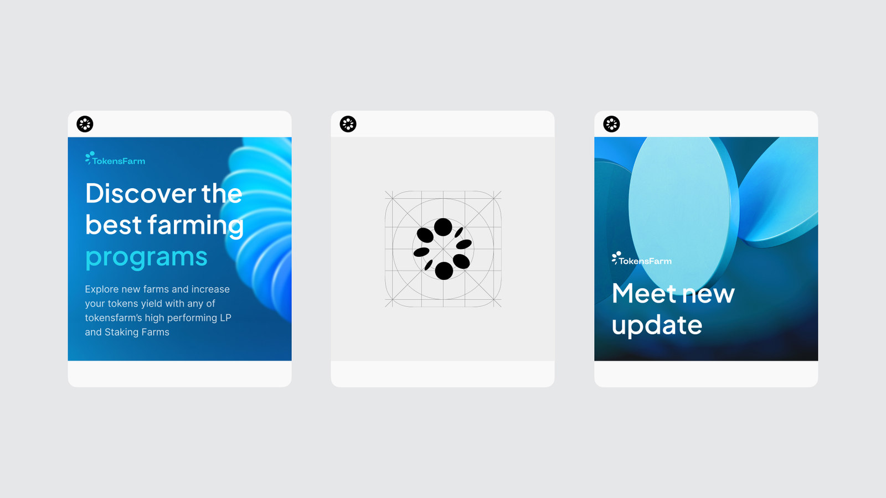
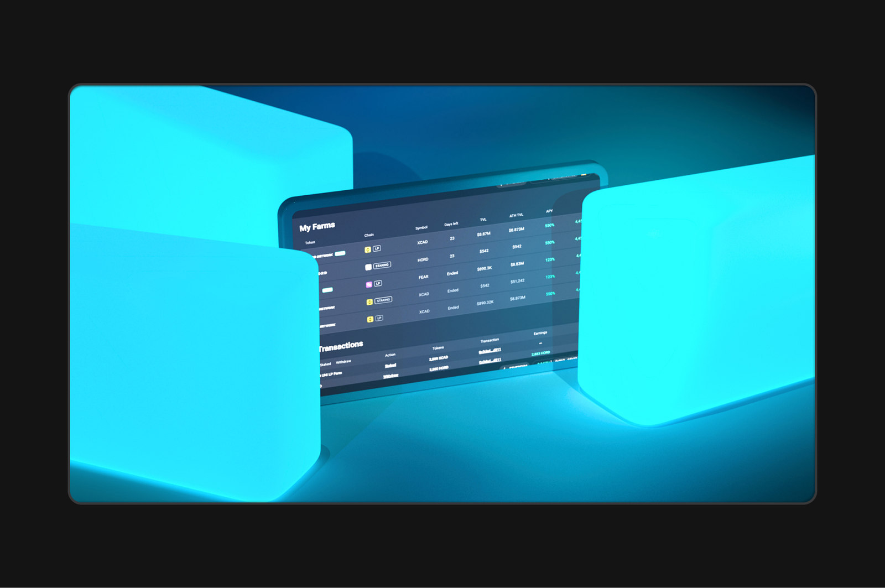
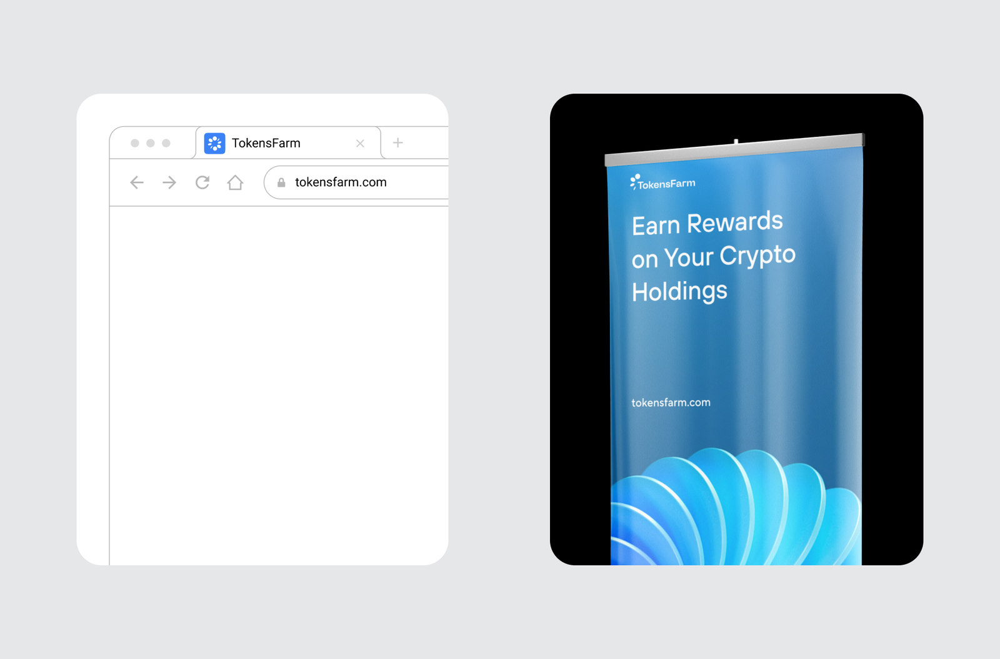
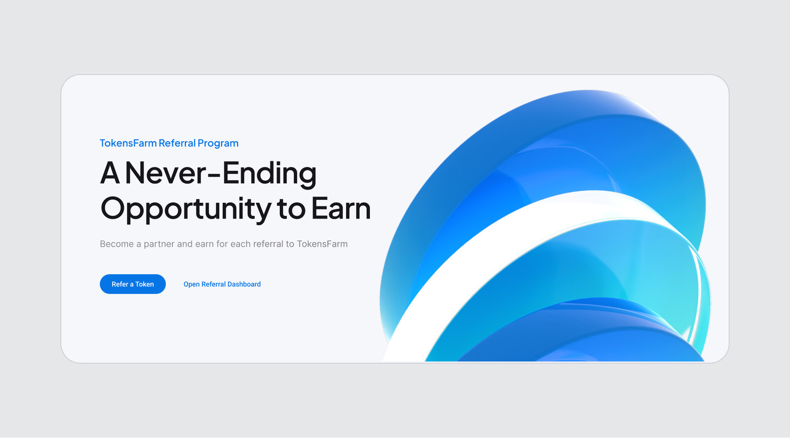
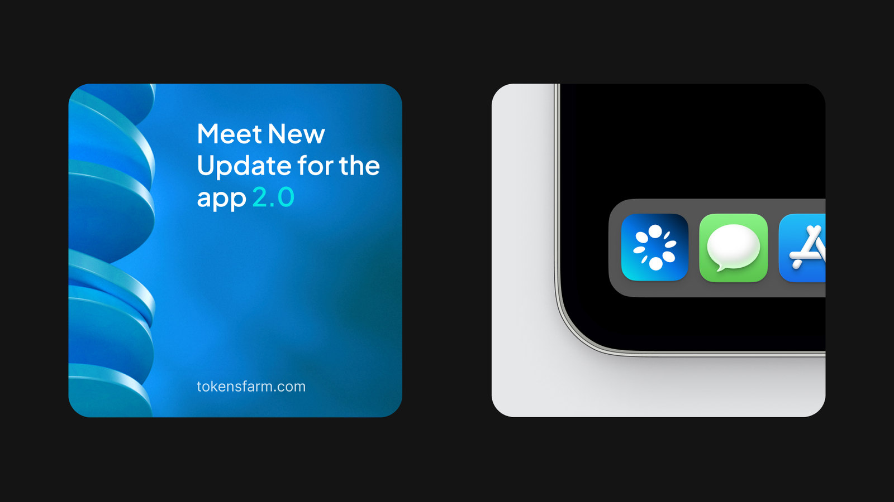
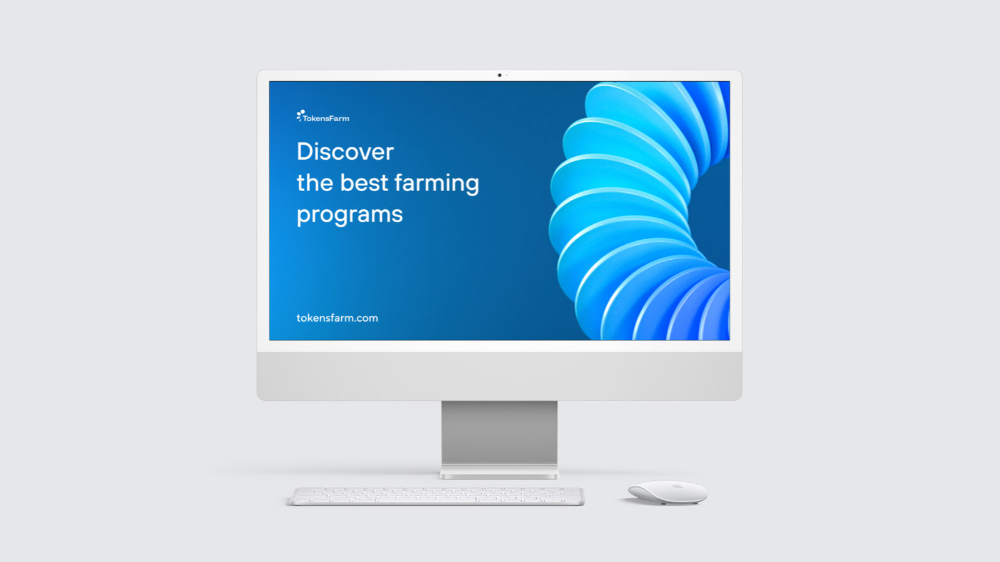
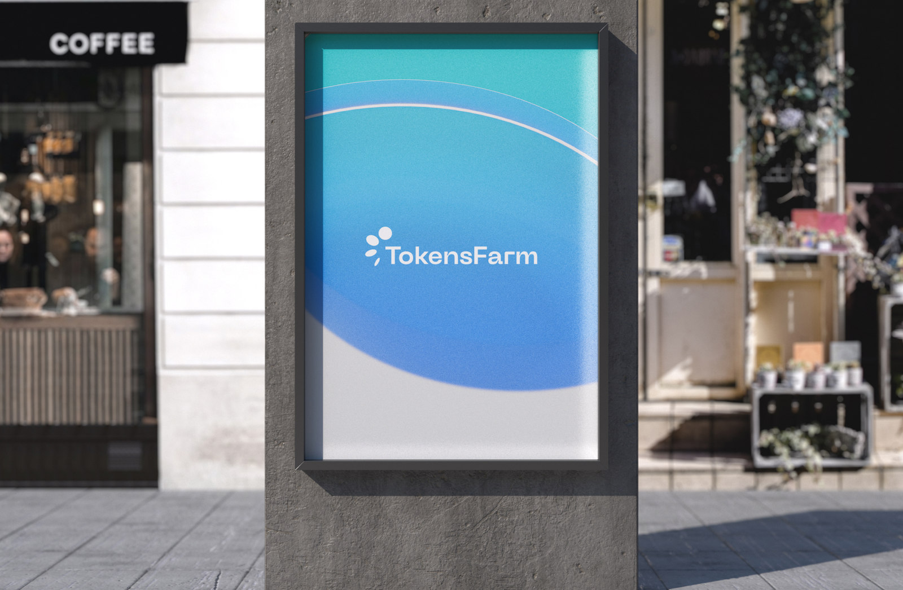